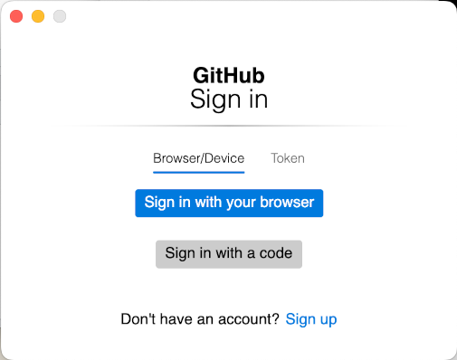
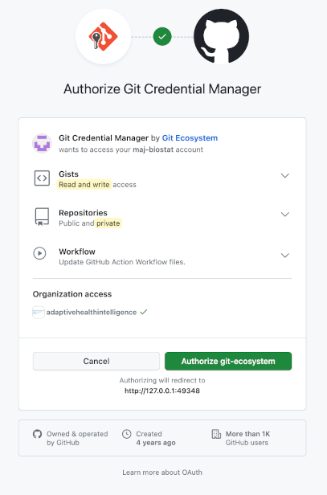
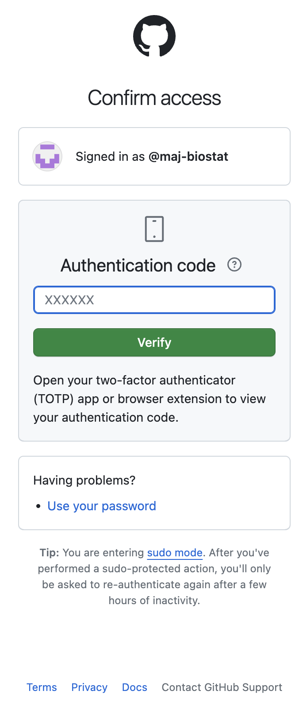
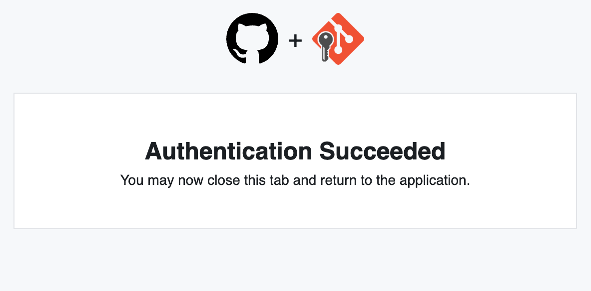

4 Github setup
4.1 GitHub account
As noted in the pre-requisites for using this knowledge base, you have to have GitHub account.
While there are multiple ways to interact with GitHub from your local machine, here we will use the commandline. There are two protocols that can be used, HTTPS and SSH. We will use HTTPS.
First we need to set up a Personal access token.
4.1.1 Personal access token
GitHub introduced personal access tokens a short while ago. Personal access tokens are basically a password with some bells and whistles.
- Login to your GitHub account.
- Open Creating a personal access token (classic) in a new tab in your browser and follow the instructions.
- Set the expiry to at least several months into the future.
4.2 Git Credential manager
The GCM is a platform agnostic credential manager (in English, that translates loosely to a password manager). Once it’s installed and configured, Git Credential Manager is called by git and you shouldn’t need to do anything special.
The next time you clone an HTTPS URL that requires authentication, Git will prompt you to log in using a browser window. You may first be asked to authorize an OAuth app. If your account or organization requires two-factor auth, you’ll also need to complete the 2FA challenge.
Once you’ve authenticated successfully, your credentials are stored in the macOS keychain and will be used every time you clone an HTTPS URL. Git will not require you to type your credentials in the command line again unless you change your credentials.
4.2.1 GCM install
For Windows users it can be installed by selecting this option during the installation wizard, see Section 2.2.3, step 6.
For macOS, use homebrew again, specifically:
brew install --cask git-credential-manager
## ==> Downloading https://formulae.brew.sh/api/cask.jws.json
## ############################################################################################################################################## 100.0%
## ==> Downloading https://github.com/git-ecosystem/git-credential-manager/releases/download/v2.3.2/gcm-osx-arm64-2.3.2.pkg
## ==> Downloading from https://objects.githubusercontent.com/github-production-release-asset-2e65be/158405551/3b89ee5f-5275-4316-a794-6f39e38849c4?X-Am
## ############################################################################################################################################## 100.0%
## ==> Installing Cask git-credential-manager
## ==> Running installer for git-credential-manager with sudo; the password may be necessary.
## Password:
## installer: Package name is Git Credential Manager
## installer: Installing at base path /
## installer: The install was successful.
## 🍺 git-credential-manager was successfully installed!4.2.2 GCM demo
Below I demo the process by cloning a private repository from my GitHub account.
192-168-1-100:tmp mark$ git clone https://github.com/maj-biostat/wisca_2.git
Cloning into 'wisca_2'...
info: please complete authentication in your browser...at this point the following window is launch by GCM:

selecting Sign in with your browser the following will launch in your default browser (Chrome, Safari, etc)

selecting Authorize git-ecosystem will result in

at which point you use the 2-factor authenticator tool (I use google authenticator) to respond with an authentication code.

Looking back at the terminal, the following output can be observed, which details the repository being cloned.
remote: Enumerating objects: 297, done.
remote: Counting objects: 100% (297/297), done.
remote: Compressing objects: 100% (156/156), done.
remote: Total 297 (delta 148), reused 284 (delta 137), pack-reused 0
Receiving objects: 100% (297/297), 7.85 MiB | 2.13 MiB/s, done.
Resolving deltas: 100% (148/148), done.Finally, you will receive an email of this sort:
Hey maj-biostat!
A first-party GitHub OAuth application (Git Credential Manager) with gist, repo, and workflow scopes was recently authorized to access your account.
Visit https://github.com/settings/connections/applications/0120e057bd645470c1ed for more information.
To see this and other security events for your account, visit https://github.com/settings/security-log
If you run into problems, please contact support by visiting https://github.com/contact
Thanks,
The GitHub TeamOn repeating this process a second time, all the authentication works in the background and there will be no need to go through various authentication handshakes again.
The same process applies irrespective of whether you are using GitHub.com or the USyd GitHub Enterprise Server. However, it is adviseable to get this working in GitHub first and then work on getting it to work in the USyd GitHub Enterprise Server.
The transition from the old authentication approach has (so far) proved completely seemless for macOS. It will be interesting to see what happens for the Windows platform.
4.2.3 GCM configuration (advanced only)
You can view the current credential manager by running the following commands:
git config --local credential.helper
git config --global credential.helper
# /usr/local/share/gcm-core/git-credential-manager
git config --system credential.helperOf the local, global and system, the first one checks the local repository config, the second is your ~/.gitconfig, and the third is based on where git is installed. Note that only one credential help is configured in the above example.
In some circumstances you may need to reconfigure things. If you have to start from scratch, the following may be useful:
git config --local --unset credential.helper
git config --global --unset credential.helper
git config --system --unset credential.helperFor windows uses check the contents of the credential manager. This can be accessed via Control Panel >> All Control Panel Items >> Credential Manager or by simply typing Credential Manager in the Windows task bar. Under generic credentials you should see the git entries.
4.3 GitHub CLI
In the day to day grind, having to deal with GitHub through its Web interface can be a little cumbersome. You can obviate having to interact with GitHub through the browser by using the GitHub CLI. This tooling allows you to review, create and manage your repositories from the comfort of your commandline. You can think of it as an extension of git that allows you to invoke the GitHub specific functionality.
The extremely term gh CLI manual can be found here.
For Windows users, you can pick up the latest Signed MSI executables from the release page.
For macOS, use homebrew:
brew install gh
## ==> Downloading https://formulae.brew.sh/api/formula.jws.json
## #################################################################################################################################### 100.0%
## ==> Downloading https://formulae.brew.sh/api/cask.jws.json
## #################################################################################################################################### 100.0%
## ==> Downloading https://ghcr.io/v2/homebrew/core/gh/manifests/2.37.0
## Already downloaded: /Users/mark/Library/Caches/Homebrew/downloads/331c0b76fd34aa97342efa0e4e41373dbac71c28aeb49346b1284b3450f4105b--gh-2.37.0.bottle_manifest.json
## ==> Fetching gh
## ==> Downloading https://ghcr.io/v2/homebrew/core/gh/blobs/sha256:a8c21e08d77963c2d12102aefe38f8c010c573b771ccf729ea438c40dddb7f3a
## Already downloaded: /Users/mark/Library/Caches/Homebrew/downloads/d0e6a3f8f7a4b138b36484ec9ec8aff26b499381a0b4459f53efc0aefe001ee2--gh--2.37.0.arm64_ventura.bottle.tar.gz
## ==> Pouring gh--2.37.0.arm64_ventura.bottle.tar.gz
## ==> Caveats
## Bash completion has been installed to:
## /opt/homebrew/etc/bash_completion.d
## ==> Summary
## 🍺 /opt/homebrew/Cellar/gh/2.37.0: 191 files, 44.2MB
## ==> Running `brew cleanup gh`...
## Disable this behaviour by setting HOMEBREW_NO_INSTALL_CLEANUP.
## Hide these hints with HOMEBREW_NO_ENV_HINTS (see `man brew`).4.3.1 GitHub CLI authentication
In order to make use of gh we need to go through another round of authentication setup. To do this, go to the terminal and run:
gh auth login
## ? What account do you want to log into? GitHub Enterprise Server
## ? GHE hostname: github.sydney.edu.au
## ? What is your preferred protocol for Git operations? HTTPS
## ? Authenticate Git with your GitHub credentials? Yes
## ? How would you like to authenticate GitHub CLI? Login with a web browserFor additional information, see gh auth –help.
In order to use gh with github.com directly you need to authenticate for that platform too. Repeat the above, but now the responses look like this:
gh auth login
## ? What account do you want to log into? GitHub.com
## ? What is your preferred protocol for Git operations? HTTPS
## ? Authenticate Git with your GitHub credentials? Yes
## ? How would you like to authenticate GitHub CLI? Login with a web browserYou are nearly set. You can verify that what you have configured worked via:
gh auth status
## github.sydney.edu.au
## ✓ Logged in to github.sydney.edu.au as mjon7053 (keyring)
## ✓ Git operations for github.sydney.edu.au configured to use https protocol.
## ✓ Token: gho_************************************
## ✓ Token scopes: gist, read:org, repo, workflow
##
## github.com
## ✓ Logged in to github.com as maj-biostat (keyring)
## ✓ Git operations for github.com configured to use https protocol.
## ✓ Token: gho_************************************
## ✓ Token scopes: gist, read:org, repo, workflowHowever, for gh to work with the desired host you need to set an environment variable to tell gh which platform to use. On macOS, you can set this up easily with the following entries in the .profile shell initialisation script (or .bash_profile for those inclined).
gh-ent() {
export GH_HOST=github.sydney.edu.au
}
gh-std() {
export GH_HOST=github.com
}On Windows, I have no idea how you are supposed to do the above in an easy manner. You may just have to resort to running
set GH_HOST=github.sydney.edu.auor
set GH_HOST=github.comeach time you want to switch.
Now (on macOS) when you want to interrogate github.com repositories use:
gh-std
gh repo list
## Showing 30 of 185 repositories in @maj-biostat
##
## maj-biostat/misc-notes info for manjaro/arch linux setup public 1d
## maj-biostat/wisca_2 Revised approach to antibiogram private 25d
## maj-biostat/motc.run private Sep 11, 2023
## maj-biostat/motc.sim Simulation for motivate c trial private Sep 11, 2023
## maj-biostat/motc.stan Stan models for motc private Sep 7, 2023
## maj-biostat/quarto_demos_basic Demo using Quarto to render to word documents with custom te... private Aug 23, 2023
## maj-biostat/BayesDRM Dose response models in stan public May 21, 2023
## maj-biostat/motc.modproto public May 1, 2023and for the USyd Enterprise GitHub Server, use:
gh-ent
gh repo list
Showing 12 of 12 repositories in @mjon7053
mjon7053/motc-mgt Monitoring statistics for Motivate-C study private 1d
mjon7053/fluvid.analyses Analyses for fluvid coadministration study (COVID19 + FLU) vacc private 17d
mjon7053/motc.sap public Sep 14, 2023
mjon7053/motc-sim-report Motivate-C simulation report private Sep 12, 2023
mjon7053/roadmap-notes Notes relating to the ROADMAP project. private Sep 2, 2023
mjon7053/mjon7053.github.io private Aug 27, 2023